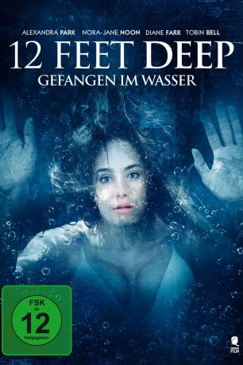

#10634 12 Feet Deep - Gefangen im Wasser
Alternativ: 12 Feet Deep (Englischer Titel)
 
 IMDB-Wertung: 5.6 / 10
IMDB-Wertung: 5.6 / 10  Metascore: 0
Metascore: 0 
Als die Schwestern Jonna und Bree zu später Stunde im örtlichen Hallenbad einen ins Becken gefallenen Ring herausfischen wollen, wird die Fiberglas-Poolabdeckung über ihnen geschlossen. Weil die Wassertemperatur sinkt und die Luft zum Atmen knapper wird, geraten die beiden jungen Frauen schon bald in Panik, zumal Bree an Diabetes leidet. Doch das sind nicht die einzigen Probleme, mit denen die beiden zu kämpfen haben. Die sadistische Hausmeisterin Clara will an ihnen ein Exempel statuieren. Statt sie zu befreien, macht sie ihnen das Leben zur Hölle.
Jahr: 2017
Dauer: 85 Minuten
FSK: 16
Land: USA Studio: MarVista EntertainmentTonspuren: DTS - ,
Untertitel: Deutsch,
Auflösung: 1080p (1920x1080) Größe: 4177 MB
Genre: Thriller, Horror
Regisseur: Matt Eskandari
Drehbuch: Matt Eskandari, Michael Hultquist
Soundtrack: Todd Haberman
Darsteller:
- Nora-Jane Noone als Bree
- Alexandra Park als Jonna
- Diane Farr als Clara
 Tobin Bell als McGradey
Tobin Bell als McGradey- Dogen Eyeler als Boy at the Pool
- Matthew Ryan Michaels als Boy at the Pool
- Donald Prince als Detective Zimmerman
- Christian Kain Blackburn als David
Datei: X:\2017(A-F)\12 Feet Deep - Gefangen im Wasser (2017, FSK16, 1920x1080).mkv seit 08.02.2019
Festplatte: HD 2017(A-Z)-2018(A-F)
 Es gibt insgesamt 152 Filme in der Gruppe '2017(A-F)'
Es gibt insgesamt 152 Filme in der Gruppe '2017(A-F)'